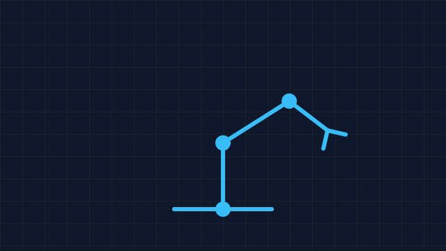

6-DOF Robotic Arm
In progressArticulated manipulator with inverse kinematics for precision tasks in the laboratory.

Articulated manipulator with inverse kinematics for precision tasks in the laboratory.
Call description.
Workshop description.
No projects published yet.